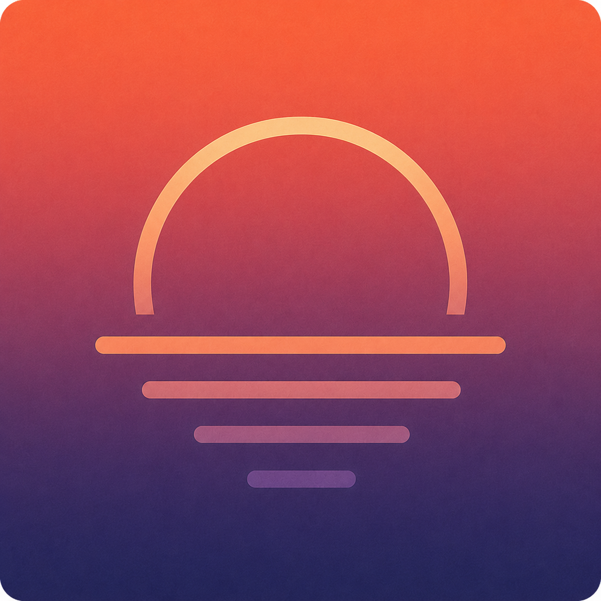

Cross-platform. Powerful. Beautiful. No subscription required.
A task manager built for people who have real work to do and better things to get back to.
Dusk is in development — built natively for macOS, iOS, Linux, and Windows, so it's the same considered app wherever you work, not a lesser version wherever it was an afterthought. Android is the natural next stop. Buy the platforms you use, once, and they're yours.
Underneath the calm surface is real depth: a recurrence engine built for how life actually repeats, rich notes, projects and subtasks, smart lists that find your work for you. None of it announces itself. It's there when you need it, invisible when you don't.
Open source, private, and local-first, with no behavioral tracking — the architecture doesn't require you to take any of this on faith. Your data stays yours, to keep or move.
Leave your email — nothing else, no spam, just one message when Dusk launches.
You're on the list — thank you.
One email, when it's time. Nothing else.
Powered by Buttondown.